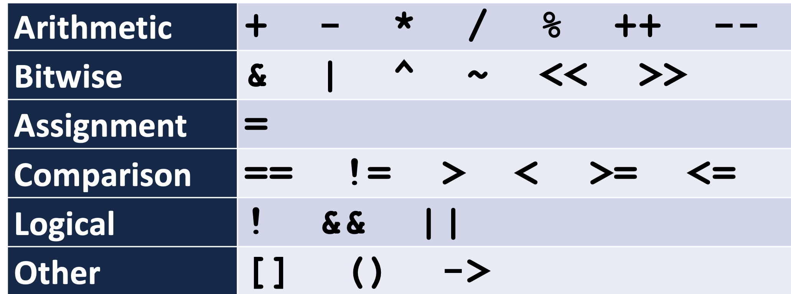

Overloading Operators
C++ allows custom behaviors to be defined on over 20 operators:

Hint: General Syntax
type operator operator-symbol ( parameter-list )
Examples how to overload an operator... https://docs.microsoft.com/en-us/cpp/cpp/operator-overloading?view=msvc-160
Ovealoading Operator with Const
很多计算并不会改变参数。例如 1+1 运算后不会变成 2+1 = 2 。
对于 Binary Operator, 你可以通过 const pass-by-reference 来保证不会修改右边的值。
但是，怎么保证左边的值不会被修改呢？ (通常会用 this pointer 来指代当前的 object)。 用 const member function.
Example Complex Number:
The header file
#pragma once
class Complex{
private:
// all data members are deep copy due to they are primitive types.
// - no need to create destructor.
double re_, im_;
public:
Complex();
Complex(double re, double im);
double getRealPart() const;
double getImaginPart() const;
Complex operator+(const Complex &other) const;
};
The implementation of the class
#include "Complex.h"
Complex::Complex(double re, double im){
re_ = re;
im_ = im;
}
Complex::Complex(){
re_ = 0;
im_ = 0;
}
double Complex::getRealPart() const{
// with the `const` decoration to say
// the function will not modift any things.
return re_;
}
double Complex::getImaginPart() const{
return im_;
}
Complex Complex::operator+(const Complex &other) const{
// make sure the function will not change content refered by `this` pointer.
double re = (*this).getRealPart() + other.getRealPart();
double im = (*this).getImaginPart() + other.getImaginPart();
return Complex(re, im);
}
注意： (*this) 等价于符号左边的对象。
You may notice that the complex number addition has the const keyword appended at the of the member function.
It means it will not modify the object for which it is called. In this context, the object being called is refered by this pointer.
Thus, if you have a const decoration at the end of the member-function, it should not make changes to the object pointed by this pointer.
Now, the LEFT and RIGHT hand side of the addition operators are constant.
thisobject is constant since constant member functionotherobject is constant since pass-by-reference (why? see the Google C++ Style. You should always labelconstfor pass-by-reference).
Now, see what will happen.
The main function
#include <iostream>
#include "Complex.h"
int main(int argc, const char * argv[]) {
Complex a = Complex( 1.2, 3.4 );
Complex b = Complex( 5.6, 7.8 );
Complex c = a + b;
std::cout << "c is (" << c.getRealPart() << ", " << c.getImaginPart() << ")\n";
return 0;
}
Assignment Operator
假设 obj1 和 obj2 都是 class Cube 的对象。
obj1 = obj2;
//obj1.operator=(obj2)
这个赋值的意思是： 让 obj1 成为 obj2 的副本 (let obj1 be a copy of obj2).
http://courses.cms.caltech.edu/cs11/material/cpp/donnie/cpp-ops.html
如果要实现 operator chaining 例如
a = b = c = d = 42;
// a = (b = (c = (d = 42)))
- 把 42 赋值到 d , 返回 d
- since assignment operator is right-associative
- 把 d 赋值到 c , 返回 c
- 把 c 赋值到 b , 返回 b ...
你大概可以发现， assignment operator = 应该返回左边的对象 才能使得 operator chaining 工作。
注意： (*this) 等价于符号左边的对象。
Example 1: Assignment Operator Overloading
Assignment Operator 必须是 Return-by-Reference.
The header file (definition) MyClass.h
MyClass & operator=(const MyClass &rhs)
The implementation syntax MyClass.cpp
类似于 Copy Constructor（但在复制之前会清除原有的内存和数据） ，并进行 deep copy.
MyClass & MyClass::operator=(const MyClass & other) {
// 1. Deallocate any memory that MyClass is using internally
// 2. Allocate some memory (to hold the contents of rhs)
// 3. Copy the values from rhs into this instance
// 4. Return *this
}
注意： (*this) 等价于符号左边的对象。
Example 2 : How to Implement Copy Constructor, Assignment Operator and Destructor?
| Copy an object | Destroy an object | |
|---|---|---|
Copy Constructor pass-by-value |
Yes | No |
Copy Assignment Operator = |
Yes | Yes |
| Destructor | No | Yes |
显然，要分别实现上述三种 Copy Constructor, Copy Assignment Operator 和 Destructor 方法。你可以只实现两种 private helper function 即可。例如
Copy Constructor Triggered by pass-by-value to perform deep copy...
Tower::Tower(const Tower &other){
_deep_copy(other);
// nothing to return as it is a constructor.....
}
Copy Assignment Operator
return-by-reference to return the lhs.
Tower & Tower::operator=(const Tower &rhs) {
if (this != &rhs) {
_destroy(); // clear old data in (*this) object
_deep_copy(rhs); // deep copy data from rhs to (*this)
}
return *this
}
To see why the self-assignment should not do anything, read the paragraph below....
Destructor ...necessary if you need to delete any heap memory!
Tower::~Tower(){
_destroy(); // clear the heap
// nothing to return as it is destrcutor....
}
Example 3 : Ensure your assignment operator doesn’t self-destroy
What is wrong with the following code?
#include "Cube.h"
int main(){
cs225::Cube c(10);
c = c;
return 0;
}
If you can remember, our implementation looks like
#include "Cube.h"
Cube & Cube::operator=(const Cube &rhs){
_destroy();
_copy(rhs);
return *this;
}
That means you first destory c, then try to copy the content in c (but it is not there anymore...).
You need something to prevent the self-assignment...
#include "Cube.h"
Cube & Cube::operator=(const Cube &rhs){
if (this != &rhs) {
// if (*this != rhs)
_destroy();
_copy(rhs);
}
return *this;
}
Now, only if the current object (lhs) is different from the rhs, the assignment will do the actual job....
Remember, this is a pointer....
Hint: Pointer Address Comparision
And using pointer address comparision requires less work...
(pleaase use if (this != &rhs))